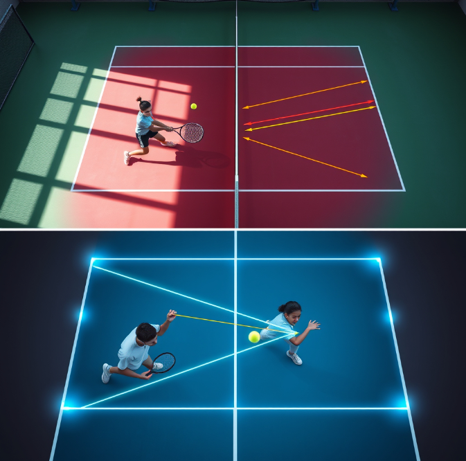

One dashboard. Every athlete. What changed. You know who needs attention before they walk on court — not after the session ends.

Assign drills from the AI report directly to an athlete. They get notified. You move on to the next player. No chasing. No copy-paste. No extra admin.
Parents stop asking vague questions when they can see exactly what you're working on and why. Informed families are your biggest advocates — not your biggest distraction.
The win is not just analysis. It's closing the loop from report to assignment to accountability — without extra admin at each step.
Go beyond "hit more balls." Get mechanics, tactics, and a match plan built from your athlete's most recent footage.
Junior athletes who know exactly what to work on between lessons train harder — and arrive to each session having already applied the fix.
Start with one athlete. When the report-to-drill loop feels clean, roll out across your full roster. No long-term commitment required.
"My client was surprised I had already reviewed her footage and assigned drills before she even got home. That's the kind of coaching relationship this creates."
"Parents stopped texting me asking 'what are you working on with my kid?' — they can see it in the report. That alone saved me hours every week."
We can map the report, assignment, and roster flow with you before a wider rollout — starting with just one athlete if that's easiest.